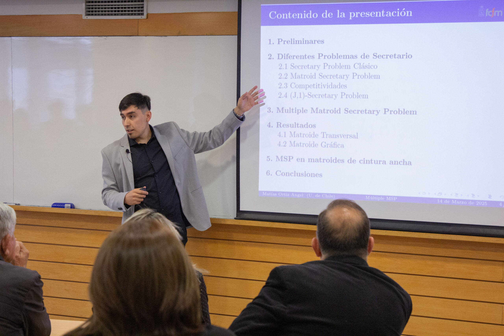
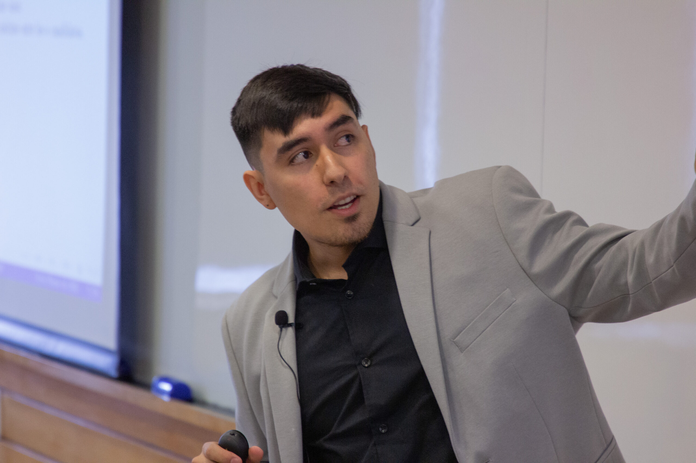
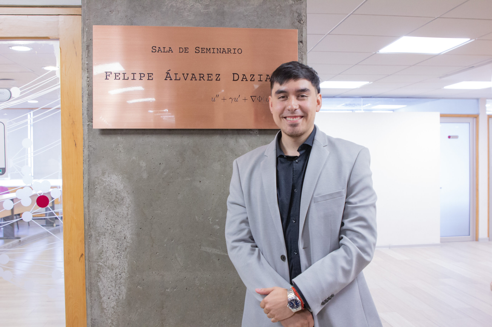
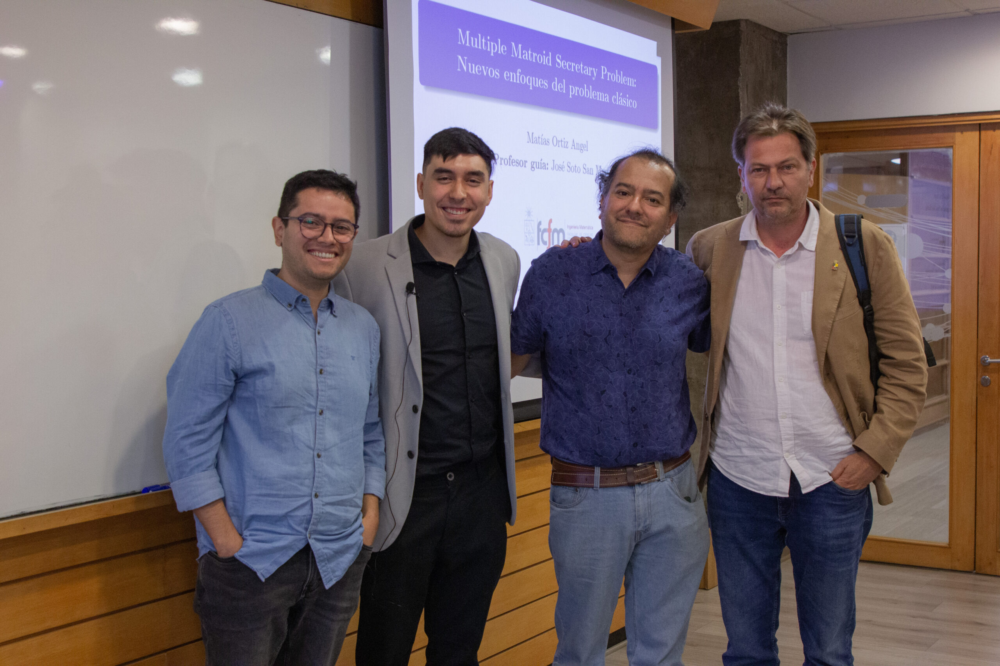
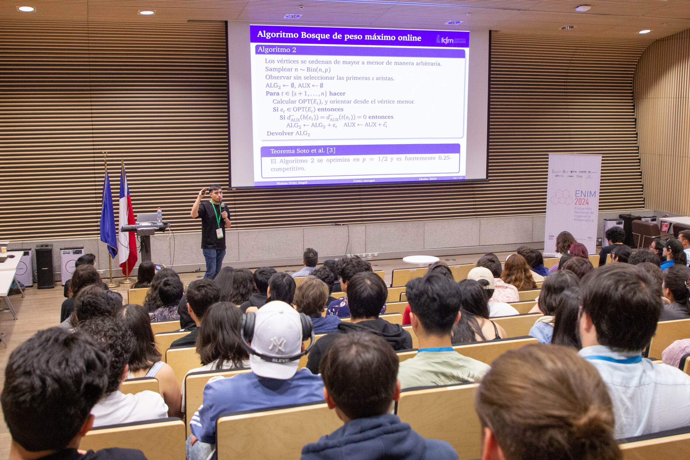
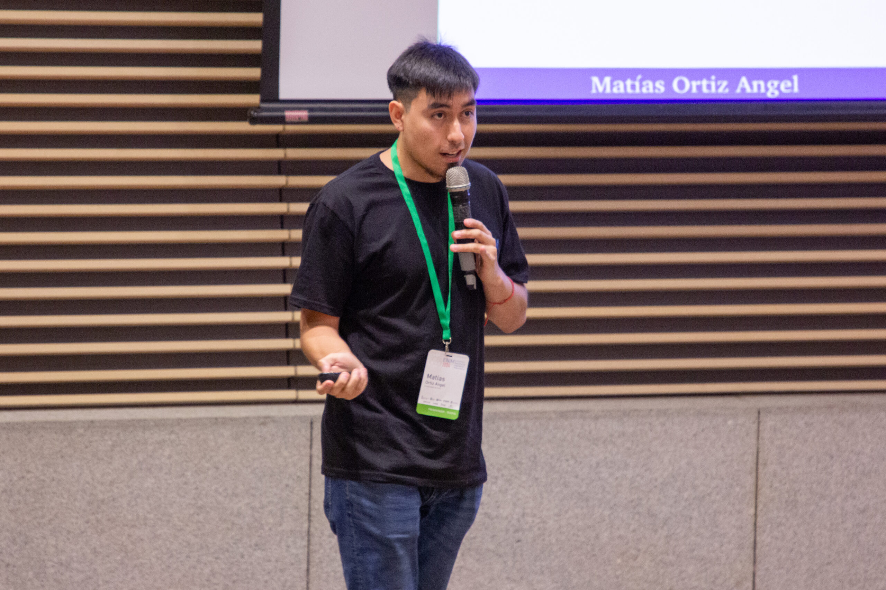

About
I am currently pursuing a Ph.D. in Engineering Sciences with a specialization in Mathematical Modeling at Universidad de Chile (FCFM). My work focuses on mathematical modeling, algorithmic thinking, and stochastic decision-making with applications to real-world systems.
I hold a Master of Engineering Sciences (Applied Mathematics) and a degree in Mathematical Civil Engineering from Universidad de Chile. I am interested in contributing to impactful research with international collaboration.
Research Interests
- Algorithms
- Online Stochastic Optimization
- Combinatorial Games
Academic Moments





Talks and Presentations
-
Master's Seminar Presentation I (FCFM)
A New Probabilistic Approach to the Matroid Secretary Problem
Autumn Semester 2024.
Introductory seminar on the problem and promising directions for future results.
-
Master's Seminar Presentation II (FCFM)
Multiple Matroid Secretary Problem: New Approaches to a Classical Problem
Spring Semester 2024.
-
ENIM 2024 - Tesistas
Encuentro Nacional de Ingenieria Matematica (ENIM 2024).
Official website DIM coverage and participation


-
Discrete Mathematics School 2025
-
MIP South America 2025 - Poster Presentation
-
Doctoral Program Talk
Defense and Milestones
Dual Degree Thesis Defense (M.Sc. and Engineering)
Thesis: Multiple Matroid Secretary Problem: New Approaches to a Classical Problem
Teaching
- Linear Algebra - Teaching Assistant (2025)
- Online Optimization with Stochastic Information and Prophet Inequalities - Teaching Assistant (2024)
- Introduction to Algebra - Teaching Assistant (2022-present)
- Stochastic Simulation - Teaching Assistant (2023)
- Probability and Statistics - Teaching Assistant (2023-2024)
- Introduction to Theoretical Mathematics - Teaching Assistant (2021)
Research and Professional Experience
- Visiting PhD Researcher, FairPlay Team (Criteo-ENSAE-INRIA), Paris-Saclay, France - 2025. Supervised by Vianney Perchet.
- Research Assistant in Explainability of AI, Inria Saclay Research Center, France - 2024 (Professional Internship 3). Supervised by Michele Sebag.
- Research Assistant, Combinatorial Explorable Uncertainty (Master's Thesis), Universidad de Chile - 2024. Thesis: Multiple Matroid Secretary Problem, supervised by Jose Soto.
- Research Assistant in Seismic Wave Analysis for Seismic Tomography, CMM, Universidad de Chile - 2022 (Professional Internship 2). Supervised by Joaquin Fontbona.
- Investment Advisor, Servicios Industriales Betelco Spa - 2021 (Professional Internship 1).